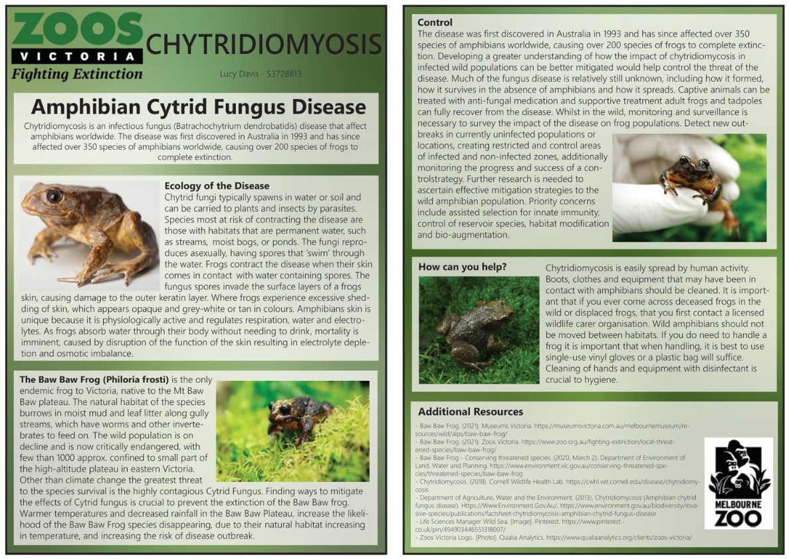

Currently in my third year out of four studying a Bachelor of Geospatial Science. Whilst not in lockdown or working as a GIS Analyst, at a railway enginnering company, my free time consists of horse riding, road trips and spending time with friends, both two and four legged. Engaging in this subject of Professional Practise has given me insightful knowledge that will help build and shape my career. Although I enjoy working in my current role at Agonics, I would like to explore further roles interstate or perhaps internationally, when my study ceases and hopefully, the pandemic is no longer a treat to travel restictions.
geoportfolio
Project
Examples of some of Lucy's Visual Work
This Bushfire Destruction map was created in a Cartography. Illustrating the large proportion of Victoria that was burnt in the 2019/20 bushfire season, as well as highlighting the Eucalyptus varieties that were eliminated completely and any new species that grew in place.

The poster above was created to demostrate a specfic topic in Enrionmental Processes and Change. This particular breed of frog is exposed to a deadly disease, that consquently exposes the species to extintion. The purpose use of this poster would be used as a information sheet in a zoo or wildlife exhibit environment to educate the interested public on the manifestation and control taken to protect these frogs.